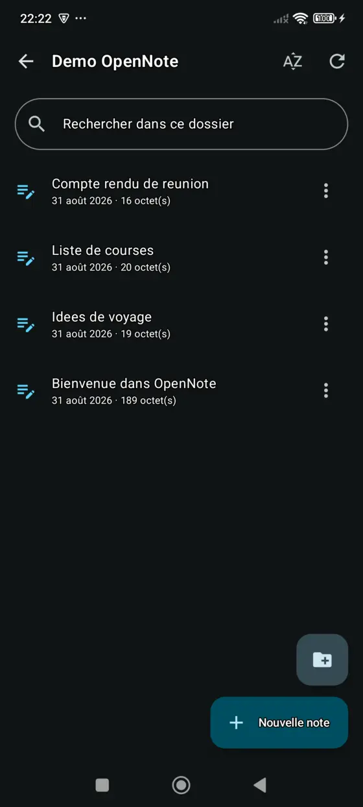
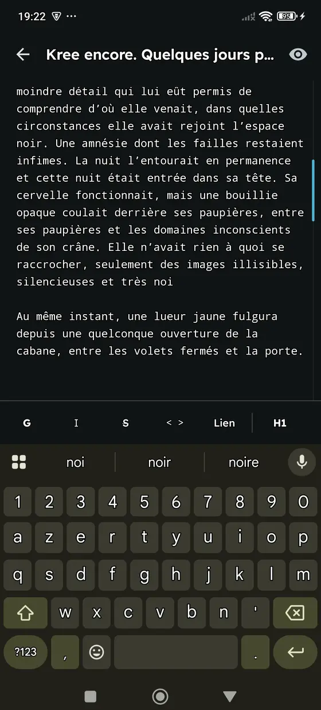
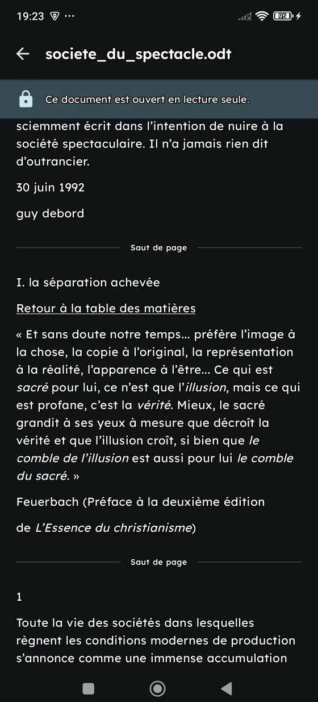

A complete Markdown editor
Create and edit .md and .txt files, read .docx and .odt documents. Markdown formatting bar, rendered preview in one tap.
Cette page existe aussi en français.
Version françaiseA light, open source notebook. Keep everything on your phone, or sync with your OpenCloud or ownCloud Infinite Scale server.



You choose on first launch, and you can change your mind later in the settings.
No account, no server. Your notes stay on the device and can be sent to a server whenever you decide.
Your notes are plain .md files in your OpenCloud or ownCloud Infinite Scale space. Read them from the browser or any other client.
Create and edit .md and .txt files, read .docx and .odt documents. Markdown formatting bar, rendered preview in one tap.
The app works without a network; notes sync as soon as it comes back.
Browse by folder or by date. Interface in French, English, Spanish and German.
The signed APK is published on GitHub, with its SHA-256 fingerprint to verify the file.
Download the APKOCnotes is in beta.